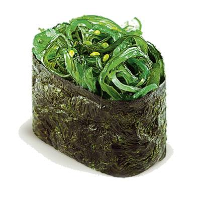

|  |
ЧуккаДиетические суши, приготовленные из одноименного салата, риса, кунжута и водорослей нори. |
 |
МагуроКлассические суши. Готовятся из тунца и риса. |
 |
ТобикоИкра летучей рыбы, рис, нори. |